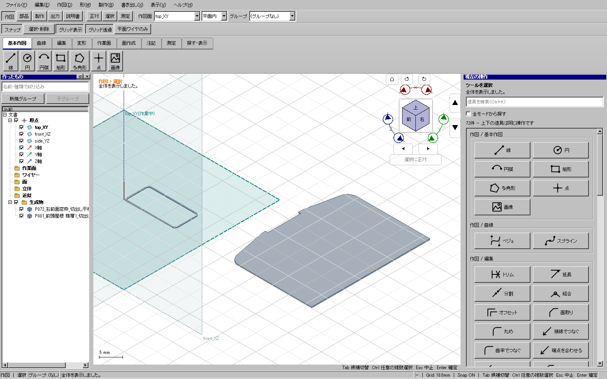

2026-11-09。実際の平板配置で、値を確定するたびに数秒待つ場面を確認した。同じ部品を独立計測すると、配置コピーと形状検査が約4237 ms、表示メッシュ作成が約85 msだった。表示用のデータを減らすだけでは中心原因を解消できない。
| 操作 | 修正前 | 修正後 |
|---|---|---|
| 配置方式の切替 | 4983 ms | 116 ms |
| 入力値の確定を伴う取消し | 4726 ms | 15 ms |
| 初回の対象取り込み | 5075 ms | 5440 ms |
初回の取り込みは軽くなったとは扱わない。この一部品・一経路の重点測定であり、全処理3倍高速化や常時60fpsを達成したとする数値ではない。
取り込んだ独立形状から表示用データを一度作り、値を変更した下見では点と法線を剛体変換する。表示の面番号、輪郭、閉鎖状態を保持する。表示データは保存の正本にしない。確定時には現在の対象と配置を用いて、従来の実形状生成・検査を実行する。同じ配置を別形式へ保存するときだけ、検査済みの実形状を共有する。
対象の取り込み直しで表示キャッシュを破棄し、配置/対象変更で確定用の状態を無効にする。元文書のID/リビジョンの変化、無効な方向、対象なし、元文書への上書きは従来どおり拒否する。公開kernel API・保存形式・最終出力の形状検査は変更していない。

実UI456で、傾いた枠をXY平面へ置き、別の平板と合成・保存・再読込した。両方の閉ソリッド、板厚、体積、面積、XY位置を独立検査し、元の形を保持した。検査用に形状を生成してCADへ注入する操作は行っていない。
修正前に回帰が失敗することを確認。修正後の出力UI24件が成功し、回転を含む実際の表示範囲、確定時にだけ実形状を作ること、形式切替・STL/STEP/KCD2・同一文書/既存文書への合成、取消しとnative所有、文書変更の拒否を確認した。
重点検証済み。全体・配布版ゲートと公開は後段。114部品の材料別配置と最終配布物の作成を継続している。実際の切断・曲げ・接着・組立は未実施。